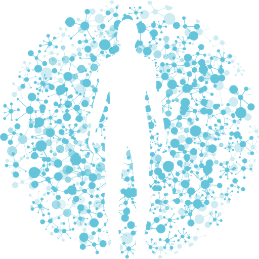
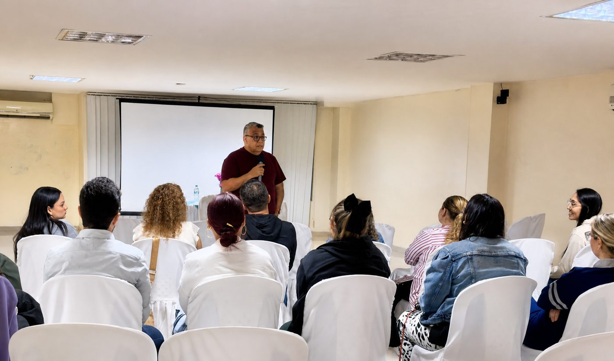
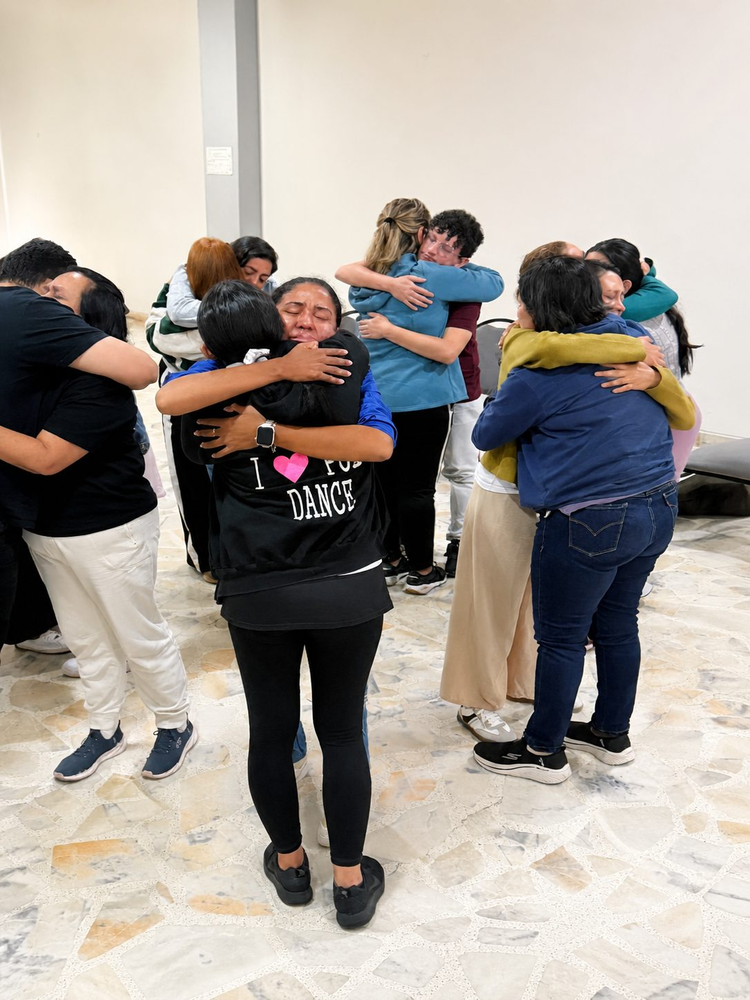
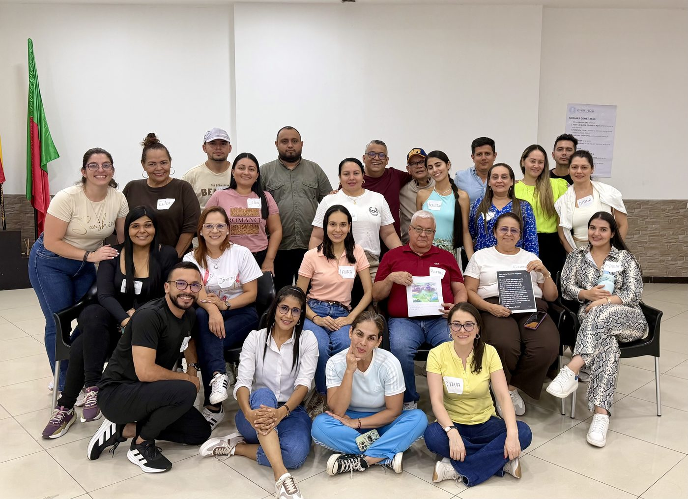

Encuentros individuales
Un espacio confidencial para comprender lo que estás viviendo y encontrar nuevas maneras de responder.
Aquí puedes hablar de eso que llevas tiempo evitando y que, curiosamente, sigue acompañándote a todas partes.
Crecimiento humano · desde 1995
Transforma tu presente. Vuelve a ti.
Soy Alberto Chirinos. Desde 1995 acompaño a personas, familias y equipos en procesos de crecimiento humano y transformación emocional. Te ayudo a comprender lo que sientes, reconocer lo que repites y relacionarte de una manera más consciente contigo y con los demás.
Presencial y en línea · Venezuela y Colombia
Para escuchar
Ponte cómodo, busca un lugar tranquilo y dale al play. Son prácticas breves para volver al cuerpo cuando la cabeza no da tregua.

Reconocerte
La vida no trae manual de instrucciones. Sin embargo, trae señales, relaciones que nos enseñan y algunas lecciones que regresan tantas veces que ya deberían pagar alquiler.
Marca lo que reconozcas. Nadie lo está viendo, y a veces nombrarlo ya cambia algo.
No significa que estés mal. Significa que alguna parte de tu historia necesita ser comprendida, atendida y tratada con más amor.
Hablemos de estoMi misión
Acompañarte a comprender tu historia, transformar patrones emocionales y fortalecer la relación contigo mismo.
Trabajo desde una mirada integral que incluye pensamientos, emociones, cuerpo, vínculos y espiritualidad.
No vengo a decirte cómo debes vivir. Te acompaño a escucharte con mayor claridad, mientras el miedo aprende que ya no puede quedarse con el micrófono.
Mi propósito
Volver a ti es reconocer tu valor, escuchar tus emociones y dejar de vivir únicamente desde las heridas del pasado o las expectativas de los demás.
No se trata de convertirte en una persona perfecta. Las redes sociales ya tienen suficientes voluntarios para ese puesto.
Se trata de vivir con mayor autenticidad, serenidad y libertad interior.
Visión
Ser una marca referente en crecimiento humano y transformación emocional para el mundo de habla hispana.
Crear una comunidad de personas capaces de comprender su historia, cuidar sus vínculos y vivir con mayor conciencia, responsabilidad y compasión.
No buscamos construir vidas sin problemas. Buscamos personas con mejores herramientas para no convertir cada dificultad en una mudanza emocional permanente.
Formas de trabajo
Cuatro maneras de entrar al mismo proceso. La que necesites hoy es la correcta.
Un espacio confidencial para comprender lo que estás viviendo y encontrar nuevas maneras de responder.
Aquí puedes hablar de eso que llevas tiempo evitando y que, curiosamente, sigue acompañándote a todas partes.
Encuentros para pasar de entender el cambio intelectualmente a experimentarlo de verdad.
Porque saber lo que debes hacer es importante. Conseguir hacerlo sin discutir contigo durante tres semanas es otra historia.
Procesos para comprender patrones, mejorar la comunicación y construir vínculos más saludables.
Amar a la familia no significa aceptar cada conflicto como una tradición hereditaria.
Experiencias para fortalecer la comunicación, el liderazgo humano y la colaboración.
Porque trabajar en el mismo lugar no convierte automáticamente a un grupo de personas en un equipo. El ascensor tampoco hace milagros.



Quién soy
Soy facilitador de procesos de transformación emocional y crecimiento humano. Desde 1995 he acompañado a personas y grupos mediante seminarios, encuentros individuales, programas de formación y experiencias vivenciales desarrolladas en Venezuela y Colombia.
Mi trabajo integra conocimientos sobre emociones, autoestima, comunicación, cuerpo, relaciones familiares, dinámicas sistémicas y espiritualidad. A lo largo de esta trayectoria he facilitado cientos de encuentros y compartido contenidos de bienestar y crecimiento personal a través de distintos medios de comunicación.
Pero más allá de los años y las cifras, mi mayor aprendizaje ha sido este:
Cada persona posee recursos internos que pueden quedar escondidos debajo del miedo, la culpa, el dolor o la costumbre de decir «estoy bien» demasiado rápido.
En sus palabras
A veces un texto no alcanza. Este es Alberto contándolo con sus propias palabras, sin guion y sin prisa.
Cuatro minutos. Ponle sonido.
Trayectoria
Este proyecto comenzó con una pregunta: ¿qué necesita una persona para reconciliarse consigo misma y recuperar la alegría de vivir? La respuesta fue construyéndose mediante el estudio, la experiencia y miles de encuentros humanos.
Nace una propuesta dedicada al crecimiento humano, la autoestima y la transformación emocional.
Los encuentros se convierten en espacios para experimentar el cambio, no solamente para hablar de él.
Los seminarios llegan a diferentes ciudades de Venezuela y Colombia.
La televisión y los contenidos audiovisuales permiten compartir herramientas con nuevos públicos.
El trabajo incorpora dimensiones emocionales, corporales, familiares, relacionales y espirituales.
Una nueva etapa con lenguaje contemporáneo, experiencias presenciales, contenidos digitales y una comunidad orientada a vivir con mayor conciencia.
Evolucionar no significa dejar de ser quien eras. Significa reconocer cuándo tu vida necesita una actualización y dejar de presionar «recordármelo más tarde».
Lo que sostiene el trabajo
No eres un problema que debe ser reparado. Eres una persona que merece ser comprendida.
Amar también significa poner límites, decir la verdad y dejar de desaparecer de tu propia vida para complacer a todos.
Cada proceso tiene su ritmo. Comparar tu camino con el de otra persona es como enfadarte con una planta porque el árbol vecino creció primero.
Tu historia explica muchas cosas, pero no tiene que decidirlo todo.
No buscamos esconder los síntomas debajo de una frase positiva. Primero escuchamos lo que vienen a decirnos.
La transformación puede ser profunda sin sentirse como un documental triste de cuatro horas.
No siempre podemos cambiar lo que ocurrió, pero sí podemos transformar la relación que tenemos con ello.
Para llevar
El siguiente paso
No necesitas llegar con todas las respuestas. Solo necesitas la disposición de mirarte con honestidad, comprenderte con amor y dar el siguiente paso.
Tu historia merece ser comprendida. Tu presente todavía puede ser transformado.
Quiero dar el primer paso¿Prefieres escribir con calma? También puedes hacerlo por correo: albertodariochirinos@gmail.com
Sígueme
Escríbeme
No hace falta que lo tengas ordenado ni claro. Con unas líneas basta para empezar a conversar.
Escríbenos por WhatsApp
+58 424 711 9592 Venezuela +57 302 834 1685 Colombia +57 302 245 8002 Colombia